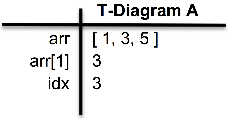
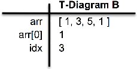
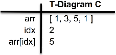
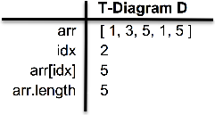
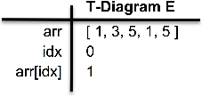

When trying to decipher complex code, particularly if someone else wrote it, T-diagrams can prove valuable. Eventually you may not need them, but while you are early in the journey to become a self-sufficient developer, you should use them frequently. Here’s how they work:
T-diagrams record the state of local variables, including arrays and their indices. After each assignment in your code, update the diagram. Before a conditional (IF/ELSE, or each time through a WHILE or FOR loop) check variable values in a T-diagram to predict how code will behave. Let’s try a short function.
Here’s the code we will trace through. No sweat, right?
1. var arr = [1,3,5];
2. var idx = arr[1];
3. arr[idx] = arr[0];
4. idx--;
5. arr.push(arr[idx]);
6. idx = arr.length - arr[idx];
7. console.log(idx + arr[idx]);
Lines 1-2: following these lines, we have T-diagram A. We reflect that idx has been set to 3, so the following line refers to arr[3].

Line 3: in this line, we set arr[3] to become 1, which is reflected in T-diagram B.

Line 4: after decrementing idx, we have T-diagram C, including the arr[idx] (which is arr[2]) needed by line 5.

Line 5: we push 5 to array’s end. T-diagram D now represents our state (including the updated arr.length).

Line 6: this updates idx. T-diagram E reflects this value (5-5, or 0), and our updated arr[idx].

Line 7: this line sums the two values (0 + 1), to determine what will be printed by console.log. T-diagram E makes it obvious: 1.
We hope this quick walkthrough shows how T-diagrams can clarify even fairly complicated code.
Chapter 1 – Fundamentals
Only Keep the Last Few
Stan learned something today: that directly decrementing an array’s .length immediately shortens it by that amount. Given array arr and number X, remove all except the last X elements, and return arr (changed and shorter). Given ([2,4,6,8,10],3), change the given array to [6,8,10] and return it.
Math Help
Cartman doesn’t really like math; he needs help. You are given two numbers – coefficients M and B in the equation Y = MX + B. Build a function to return the X-intercept (his older cousin Fiaz wisely reminds him that X-intercept is the value of X where Y equals zero; Cartman just snorts in his general direction).
Poor Kenny
Kenny tries to stay safe, but somehow everyday something happens. Out of the last 100 days, there were 10 days with volcanos, 15 others with tsunamis, 20 earthquakes, 25 blizzards and 30 meteors (for 100 days total). If these probabilities continue, write whatHappensToday() to print a day’s outcome.
What Really Happened?
Kyle (smarter than Kenny) notes that the chance of one disaster should be unrelated to the chance of another. Change whatHappensToday() function to create whatReallyHappensToday(). In this new function test for each disaster independently, instead of assuming exactly one disaster will happen. In other words, with this new function, all five might occur today – or none. Maybe Kenny will survive!
Soaring IQ
Your time at the Dojo will definitely make you smarter! Let’s say a new Dojo student, Bogdan, entered with a modest IQ of 101. Let’s say that during a 14-week bootcamp, his IQ rose by .01 on the first day, then went up by an additional .02 on the second day, then up by .03 more on the third day, etc. all the way until increasing by .98 on his 98th day (the end of 14 full weeks). What is Bogdan’s final IQ?
Letter Grade
Mr. Cerise teaches high school math. Write a function that assigns and prints a letter grade, given an integer representing a score from 0 to 100? Those getting 90+ get an ‘A’, 80-89 earn ‘B’, 70-79 is a ‘C’, 60-69 should get a ‘D’, and lower than 60 receive ‘F’. For example, given 88, you should log "Score: 88. Grade: B". Given the score 61, log the string "Score: 61. Grade: D".
More Accurate Grades
For an additional challenge, add ‘-’ signs to scores in the bottom two percent of A, B, C and D scores, and “+” signs to the top two percent of B, C and D scores (sorry, Mr. Cerise never gives an A+). Given 88, console.log "Score: 88. Grade: B+". Given 61, log "Score: 61. Grade: D-" .
Chapter 1 – Fundamentals